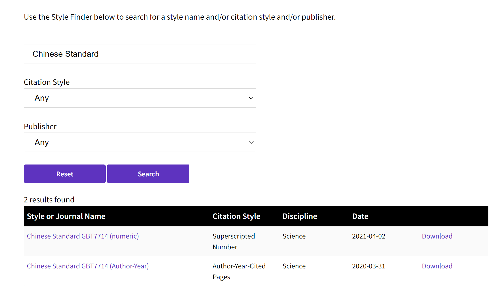
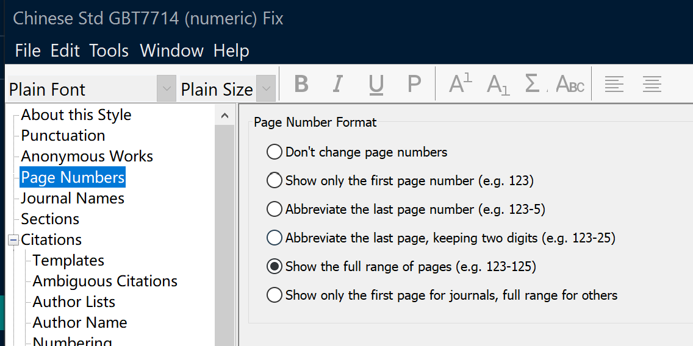
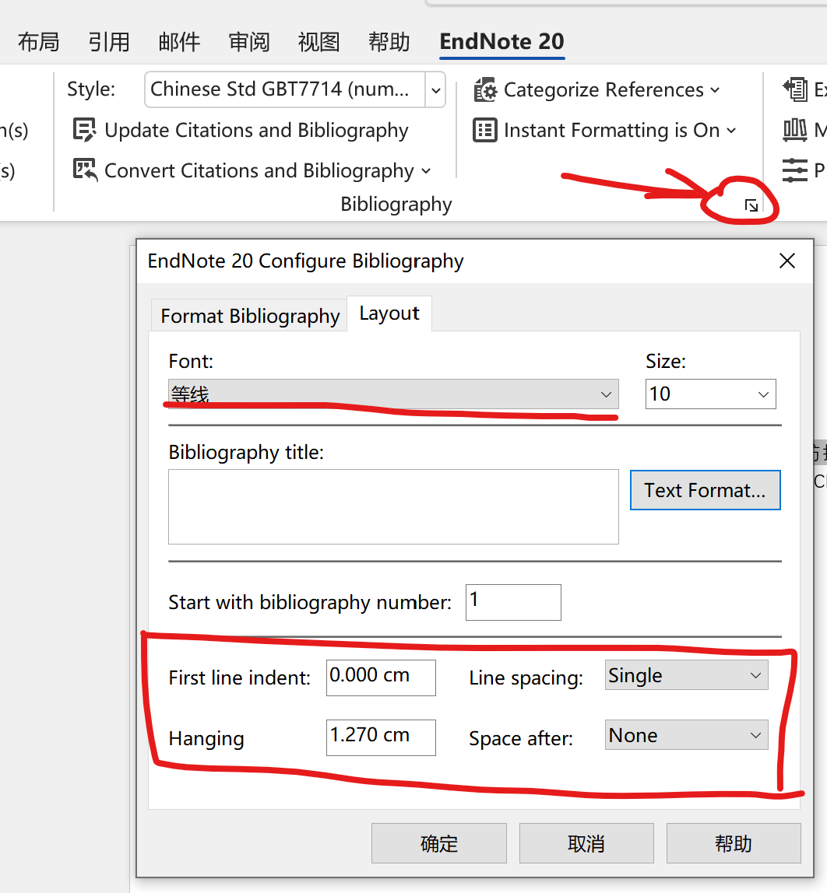

使用EndNote管理文献
毕业论文要求使用 Word 来写，就想用 Word 插件来管理引用文献，记录一下使用时遇到的问题和解决方法。我使用的是 EndNote 20，本文的方法在其他版本可能不适用。
使用 GB/T7714 Style
在菜单栏中点击 Tools/Output Sytle/Open Style Manager…，打开样式管理器。
点击样式管理器中的 Get more on the web 按钮，就会打开一个网页，在这个网页里搜索 Chinese Standard 就能找到两个国标样式了，全都下载下来。

将下载得到的两个样式文件放到 EndNote 安装目录的 Style 目录下，比如我的是 C:\Program Files (x86)\EndNote 20\Styles。
然后回到 Style Manager，把两个国标样式都勾选上，再打开你的 Word 文档，就可以选择国标样式了。
相关问题
中文期刊只显示前三位作者
对于作者数量大于 3 位作者的期刊，我们的毕业论文格式要求只显示前 3 位作者，然后在后面加上 “et al.” 或者 “, 等”。
对于英文期刊来说当然用 “et al.”，但是对于中文期刊来说，应该使用 “, 等”。
EndNote 下载的国标格式，不论英文期刊还是中文期刊，都显示的“et al.”。这是因为不论英文期刊还是中文期刊，都被视为一种文献类型：“Journal Article”。
要对中文期刊做特别设置，就要新创建一种文献类型。
点击菜单栏 Edit/Preferences 打开设置页面，点击 Reference Types。
如图所示，在 Default Reference Type 中选择 Unused 1（因为我已经设置过了，所以图中只剩下Unused 2/3）。

然后点击 Modify Reference Type 按钮，如图填写设置。
保存之后就创建了“中文期刊”这种文献类型，现在要对这种类型进行设置。
在菜单 Tools/Output Sytle/ 中勾选 Chinese Std GBT7714(numeric)。然后再再到菜单 Tools/Output Sytle/ 中点击 Edit “Chinese Std GBT7714(numeric)”，进入编辑界面。
在编辑界面，首先在菜单 File/Save as 另存为新的样式，比如我取名为 Chinese Std GBT7714(numeric) Fix，避免影响下载的国标样式。
然后如图所示，修改 Editor Lists 中的设置，将原来的 “, et al.” 替换为 “, 等”。
这里不要修改 Author Lists 中的设置。因为这两个设置是不限定文献类型的，也就是说英文期刊和中文期刊都会受到影响。而我们对英文期刊和中文期刊分别设置的原理就是将 Author Lists 的设置应用于英文期刊，而 Editor Lists 的设置应用于中文期刊。
接下来编辑中文期刊的 Style 模板。如图所示，点击 Reference types 按钮，勾上 “中文期刊”类型，然后写入如下模板。
1 | Secondary Author. Title [J]. Journal, Year|, Volume|(Issue)| : Pages|. |
注意，这里用的不是 Author 而是 Secondary Author。这里的 Secondary Author 会使用前面 “Editor Lists” 的设置，这就是对英文文献和中文文献使用不同设置的原理。对于英文文献，其 Reference Type 为 “Journal Article”，模板中使用的是 “Author”，则会应用 “Author Lists” 的设置。
还要注意，这里的 “|” 和 “°” 都不是普通文本，不能用复制粘贴的方式填入，应该在右上角的 “Insert Field” 按钮中插入。
其中“Foced Separation” 对应 “|”，“Link Adjacent Text” 对应 “°”，空格对应“·”。
我这里的模板是经过调整的，对于那些没有卷号的期刊，也可以正确显示。（如果使用 Journal Article 的模板，没有卷号的期刊会显示多余的逗号和空格）
保存修改，接下来的操作是把中文期刊的文献类型修改为“中文期刊”。
在文献列表中双击你要修改的文献，然后如图所示将 Reference Type 修改为 “中文期刊”。
将所有的中文期刊的 Reference Type 都修改为“中文期刊”后，接下来要编辑它们的 “Secondary Author”。
首先创建一个 Smart Group，将所有的“中文期刊”都列出来，具体方法是右键左侧的 “MY GROUPS”，点击 “Create smart group”。
切换到刚刚创建的 Smart Group，这时候列表里只有 Reference Type 为 “中文期刊” 的文献。
然后点击菜单栏的 Library/Change/Move/Copy Fields，按照如图所示设置，将 Author 的值复制到 Secondary Author。
然后，回到 Word 里更新引用，作者数量大于三位的文献应该会使用正确的格式显示了。
页码显示问题
下载的国标样式的页码显示方式是错误的，要修改为显示完整的页码，其设置方法如图所示。

不要全大写的作者名称
下载的国标样式中，英文文献的作者是字母全大写的，要修改为首字母大写，其设置方法如图所示。
中英文混排的 Word 样式调整
中英文混合排版主要的问题是字体设置，中文使用宋体，英文使用 Times New Roman 字体。但是 EndNote 的设置只支持设置一种字体，如下图所示。

我找到的一种解决方法是，在 EndNote 的字体设置中设置英文字体：Times New Roman。然后再修改 “EndNote Bibliography” 的字体样式，将中文字体修改为宋体。

很奇怪的是，对“EndNote Bibliography”的段落样式进行修改是无效的，每次更新都会被覆盖，我也不知道应该在哪里进行设置。
段落样式在 EndNote 的设置里可以设置一些简单的参数，如上上图所示，可以修改的项目有：首行缩进、行间距、悬挂缩进、后置字符。
其中行间距只支持单倍行距、1.5倍行距和双倍行距，不支持设置固定值，这点不太灵活。
只能在交稿之前手动修改参考文献列表的样式，不能完全自动化了。
使用EndNote管理文献